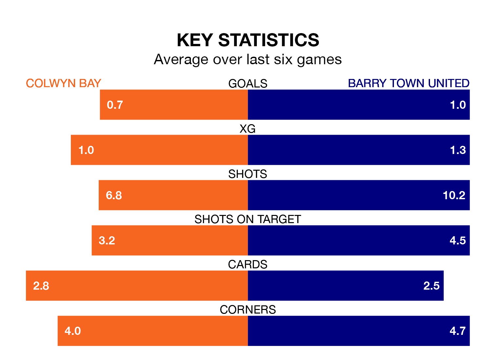

Colwyn Bay host Barry Town United in Sunday's early match at the Four Crosses Construction Arena looking to bounce back from defeat last time out in the Welsh Premier League.
Colwyn Bay, who sit zero in the league after 31 games, fell to a 3-1 away defeat to Haverfordwest County on April 13.
They face a Barry Town side who picked up a win in their last match, a 2-1 victory against Aberystwyth Town, and who sit zero in the table.
With 33 goals in 31 games so far this season, Colwyn Bay are the league's-3th-lowest scorers with 1.1 goals per game. And they are conceding more than average, letting in 66 goals at a rate of 2.1 per game.
Barry Town are also below average scorers, with 1.2 goals per game, compared to a league average of 1.5. They have conceded 1.7 goals per game.
The home side are in disappointing form in the Welsh Premier League, with one win and two draws from their last six games.
With a win and four draws over that period, United's form is slightly better – they have taken seven points from 18, compared to Colwyn Bay's five.
In the last five years, Colwyn Bay and Barry Town have played each other on four occasions. They won one each, and they drew twice.
On average, Colwyn Bay scored 1.0 goal and the Dragons 0.8 in those matches.
Their last meeting was on March 9, when they played out a 1-1 draw.
Updated: 11:31 (UTC), 15/04/24